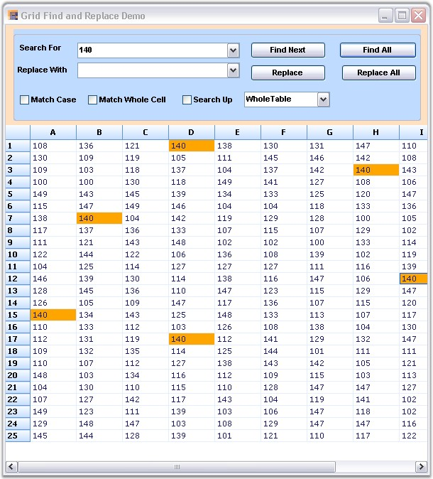

Find and Replace feature enables you to search and replace the required element present in the Grid/Worksheet. You can implement the fastest Find and Replace functionality with Grid controls by using GridFindReplaceDialogSink and GridFindReplaceEventArgs classes. The GridFindReplaceDialogSink class provides the methods that are necessary to perform a Find and Replace operation. The GridFindReplaceEventArgs class provides information about the Find and Replace dialog box.
The value entered in the Search For field is highlighted in the worksheet after the search action is performed. You can switch over to each highlighted text by clicking Find Next button. This functionality is available only when there is more than one search result.
Search and Replace Options
The search and replace actions:
· Can be performed independently or simultaneously.
· Can be done for individual search or for the entire worksheet by using the Find Next/Replace buttons.
· Can be done for all the search results by clicking Find All/Replace All buttons.
Search Options
The search options are as follows:
· Match Case-Matches case while performing search.
· Match Whole Cell-Matches the search text with the entire text in a grid cell.
· Search Up-Specifies if the search can be performed bottom-up.
o Column Only-Searches only the current column.
o Selection Only-Searches only the current selection.
o Whole Table-Searches the whole table.
The Find and Replace feature can be enabled for Essential Grid by using the following code:
1. Using C#
|
[C#]
GridFindTextOptions options = GridFindTextOptions.WholeTable | GridFindTextOptions.SearchUp; object locInfo = GridRangeInfo.Table(); GridFindReplaceEventArgs frEvents = new GridFindReplaceEventArgs(cmbSearch.Text, "", options, locInfo); GridFindReplaceDialogSink frDialog.Find(frEvents); |
2. Using VB.NET
|
[VB.NET]
Private options As GridFindTextOptions = GridFindTextOptions.WholeTable Or GridFindTextOptions.SearchUp
Private locInfo As Object = GridRangeInfo.Table() Private frEvents As New GridFindReplaceEventArgs(cmbSearch.Text, "", options, locInfo) GridFindReplaceDialogSink(frDialog.Find(frEvents)) |

Figure 124: Find and Replace